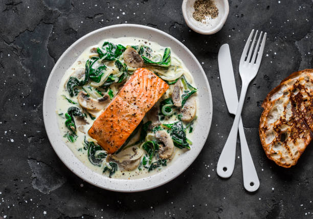

Delicious Recipe
Learn how to make this delicious dish step by step.

Ingredients
- 4 pieces Salmon Filet
- ½ Onion (sliced)
- ½ pound Oyster Mushrooms (or mushroom of your choice, sliced)
- 3 cups Baby Spinach Leaves (loosely packed)
- 3 tablespoons Olive Oil (divided)
- 1 cup Heavy Cream
- ¼ cup White Wine
- 1 teaspoon Fresh Garlic (minced)
- Salt & Pepper to taste
Instructions
- Preheat your oven to 400°F (200°C).
- Season the salmon filets with salt and pepper.
- In a large ovenproof skillet, heat 1 tablespoon of olive oil over medium heat. Add the salmon filets and sear until golden brown on both sides. Remove from the skillet and set aside.
- In the same skillet, add the remaining olive oil and sauté the onion until translucent.
- Add the minced garlic and cook for another minute.
- Add the mushrooms and cook until they release their moisture and start to brown.
- Pour in the white wine and cook until it reduces by half.
- Add the spinach leaves and cook until wilted.
- Stir in the heavy cream and bring to a simmer. Season with salt and pepper to taste.
- Return the salmon filets to the skillet and spoon some of the sauce over them.
- Transfer the skillet to the preheated oven and bake for 10-15 minutes, or until the salmon is cooked through.
- Remove from the oven and let rest for a few minutes before serving.